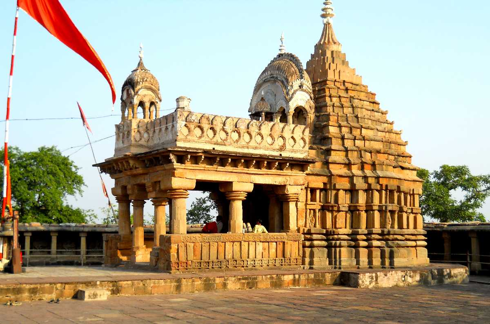
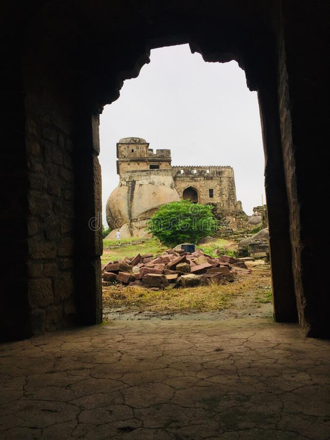

Chausath Yogini Temole
It is situated between bhedaghat and dhuadhar. Constructed on a hill, you have to climb some stairs to reach the temple. But it is definitely worth your sweat. Chousat Yogini is a temple of about 64 beautifully carved statues of Yoginis. Here, inside the main temple Lord Shiva & Parvati can be seen together riding on Nandi (bull). The main temple is encircled by 95 statues of yoginis. Plus, this temple offers you an electrifying view of the city

Raj Kumari Bai ki Kothi
Rajkumari Bai Ki Kothi(British Hotel Royal Palace) (Museum) is located in Jabalpur, Madhya Pradesh, India. Nearby area or landmark is South Civil Lines. Address of Rajkumari Bai Ki Kothi(British Hotel Royal Palace) is Jabalpur, Govindh Bhavan Colony, South Civil Lines, Jabalpur, Madhya Pradesh 482001, India. Rajkumari Bai Ki Kothi(British Hotel Royal Palace) has quite many listed places around it

Madan Mahal Fort
Situated atop a hill in Jabalpur city is a small but enchanting fort of the Rajgond rulers. It was more of a manned post on vigil for invaders now enveloped in shroud of history. The fort dates back to 11th century AD. The fort is well associated with Rani Durgavati the Gond Queen and her son Veer Narayan. Rani Durgavati eventually died fighting the mughals and is hailed as a martyr in Indian history. She also built numerous temples and tanks scattered around Jabalpur chiefly around her Garha principality